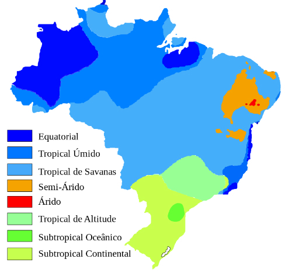

Pontos Ecoturisticos de:
BIOINFOA Região Centro-Oeste é uma das cinco Regiões que compõem o território brasileiro. É composta pelos Estados de Goiás, Mato Grosso, Mato Grosso do Sul e pelo Distrito Federal. Sua área é de 1.604.850 Km2, ocupando aproximadamente 18,8% do Brasil, assim mostrando ser a segunda maior extensão territorial entre as Regiões do Brasil, sendo que a primeira posição é a região Norte. O povoamento da região é consequência dos fluxos migratórios, isso ocorreu primeiramente devido ao transporte de gado do Sul e Sudeste para as primeiras fazendas do Centro-Oeste, além da atuação dos bandeirantes paulistas.
Sobre o clima da região, como sabemos por causa da região não ter nenhuma saída para o mar pelo motivo de ficar mais no centro do pais, o clima mais predominante acaba sendo o tropical continental, mas, não significa que alguma áreas não possa ter outros aspectos climáticos, por exemplo, algumas áreas da região podem surgir o clima equatorial, subtropical e tropical de altitude.
O clima mais predominante é o tropical continental, este clima possui duas estações bem definidas, são a seca e a chuvosa, o clima da seca é um dos climas mais conturbados para a fauna e flora, por causa que nesta época as plantas ficam mais propensas a pegarem fogo seja este feito pelo homem ou não, assim acabando desmatando várias áreas da região. Continuando a falar sobre o clima, o clima equatorial predomina no norte do Mato Grosso, com chuvas intensas e bem distribuídas durante o ano todo por causa da Floresta Amazônica e da evapotranspiração das árvores. Ainda mais, as temperaturas são bastante altas devido à proximidade com a Linha do Equador. O clima subtropical pode ser localizado nas áreas bem ao sul de Mato Grosso do Sul, com as quatro estações bem definidas: invernos rigorosos, devido à massa polar atlântica, verões quentes, e chuvas regulares ao longo do ano. O tropical de altitude, comum em áreas com altas altitudes, com temperaturas amenas, é presente no sul de Mato Grosso.